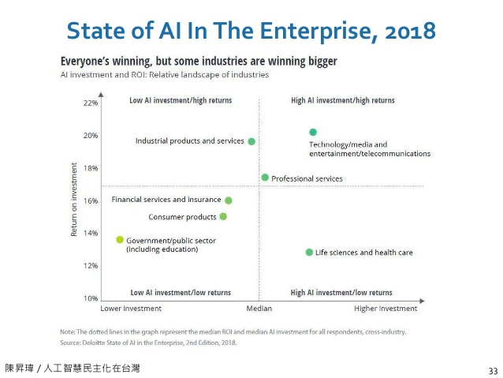

人工智慧
Table of Contents

1. 和AI聊聊天
1.1. ELIZA
1.2. ALICE
1.3. Mitsuku
1.4. ChatGPT
1.5. Bard
2. AI的發展沿革
2.1. AI的兩種發展方向
2.1.1. 連結主義(connectionism)
一套AI系統應以大腦的基本架構為模型，利用大致像是生物神經元的深度連結元件，強調學習是智慧的核心能力，並認為如果可以讓機器有效的從數據中學習，那麼人腦所具備的其他能力最終也可能會在機器上出現。
2.1.2. 符號主義
採用符號的(symbolic)方式並強調邏輯與推理的應用，對於符號主義者來說，學習並不是那麼重要，智慧的關鍵在於推理、決策和行動來發揮知識的力量。符號主義者不設計可以自己學習的演算法，而是將資訊直接手動編碼到他們建構的系統中，這種作法催生了知識工程的領域。
2.2. AI 發展大事紀
2.2.1. 1943: 人工神經網路
2.2.2. 第一波(符號邏輯)：把人類的知識與思考放入電腦
2.2.2.1. 1950: Computing Machinery and Intelligence
Figure 4: Turing發表於Psychology and Philosophy季刊的Paper: Computing Machinery and Intelligence
Turing在他從劍橋大學畢業兩年後(1936)提出通用圖靈機(universal Turing machine)的數學原理，成為所有真實世界的電腦藍圖。1950年Turing發表科學論文Computing Machinery and Intelligence，提出「機器能否思考」的問題。在這篇文章結尾，Turing提及:
We may hope that machines will eventually compete with men in all purely intellectual fields. But which are the best ones to start with? … It can also be maintained that it is best to provide the machine with the best sense organs that money can buy, and then teach it to understand and speak English. This process could follow the normal teaching a child.
Figure 5: Turing on fifty pounds
2021年英國央行格蘭銀行將Turing肖像印製於50英鎊紙幣上(之前為英國女王、James Watt、Matthew Boulton)
Figure 6: 2021年之前的50英磅紙幣
2.2.2.2. 1956: 達特茅斯暑期會議
1956年夏天，新罕布夏州的達特茅斯學院(Dartmouth College)聚集一群學者，他們會面的目的就是希望集合最聰明的腦袋，找出方法，讓電腦很快能與人類一樣聰明。…他們寫信向洛克斐勒基金會爭取經費，信中提到：
「我們會努力找出，如何讓電腦懂得人類語言，擁有抽象思考能力、能進行決策，並能自我改良，以解決人類的各種問題。我們認為，只要謹慎挑選一群傑出科學家共同合作，大約一個夏天的時間，至少會有一個以上的問題將會獲得重大進展。」
Figure 7: 一場引發AI誕生的聚會
參加這個會議的人全都大有來頭(Turing未參加，他於1954年自殺)，其中3:
- John McCarthy
Figure 9: John McCarthy
- 1958年發明Lisp語言
- 1959年提出Garbage collection解決Lisp的記憶體管理問題
- 1962年建立幫助建立了史丹佛人工智慧實驗室、在麻省理工學院與Minsky共同創立了人工智慧研究室（MIT電腦科學與人工智慧實驗室的前身）
- 1971年獲圖靈奬。
以Lisp求5!
(defun factorial (n) (if (= n 0) 1 (* n (factorial (- n 1))) ) ) (factorial 5)
- Marvin Minsky
Figure 10: Marvin Minsky
1951年，建構了第一部能自我學習的類神經網路機器SNARC(能走迷宮4)
Figure 11: SNARC (Stochastic Neural Analog Reinforcement Computer)
- 1966年與Seymour Papert發明兒童用語言Logo
- 1969年獲圖靈奬
- Claude Shannon
2.2.2.3. 1957 年
Herbert A. Somin(諾貝爾經濟學奬得主)預言電腦能在十年內敗人類(西洋棋)，此預言於 1997由IBM Deep Blue實現。
2.2.2.4. 1958年: Perceptron
感知器（perceptron）是弗蘭克·羅森布拉特在1957年就職於康奈爾航空實驗室（Cornell Aeronautical Laboratory）時所發明的一種硬體式人工神經網路(如圖136)，這也是日後類神經網路的重要基礎。
Figure 13: Mark I Perceptron全貌
Figure 14: Mark I Perceptron架構
Figure 15: Mark I Perceotron內部結構-1
Figure 16: Mark I Perceotron內部結構-2
羅森布拉特設計的 Mark I Perceptron 旨在模擬大腦的圖像識別能力，以 400 個光感測元件做為輸入來模擬視網膜(如圖147)，用 512 台電動機模擬神經細胞處理輸入訊號的功能(如圖158)，最後輸出 8 個訊號表示看到的物品(如圖169)。
以現在的眼光來看，這就是個簡單的線性轉換過程，然而，思考一下這些事件：
- 1956年AI這個名詞才剛被提出
- 1956年全世界第一套作業系統GM-NAA I/O問世、運作在IBM 704大型電腦上
- 如今用來開發AI最常用的Python到1991年才問世
- 支援的相關函式庫如Numpy於2005年開發
- Tensorflow、Keras於2015年開發
換句話說，Rosenblatt是在沒有軟體支援的情境下以線路硬把AI的功能在那個年代實作出來，裡面的線路看起來就像圖17那樣複雜….
Figure 17: Perceptron內部線路
2.2.2.5. 1966: 史丹佛研究所成立Artificial Intellgience center
該中心在語言翻譯與語音識別等領域有開創性的成果，並創立了第一個能與環境互動的自主機器人。五十年後該中心分拆出一家新創公司，擁有名為 Siri 的新型個人助理，於2010被Apple收購。
2.2.2.6. 1970: Minsky的預測
1970年,Minsky接受LIFE雜誌訪問時預測：在3~8年，我們將擁有一台具有和普通人一樣智慧的機器，能閱讀莎士比亞、幫車上潤滑油、玩辦公室政治、講笑話與打架的機器。屆時，機器將開始以驚人的速速進行自我教育、過幾個月後，它就會達到天才的程度，然後再過幾個月，它的力量將無法估量。
2.2.2.7. 1974: 幻滅
數十年的努力後，人們發現連要打造出基本的AI系統都比預期困難，於是這股熱潮開始退燒，投資者的幻想也開始破滅，許多該領域的研究人員職涯前景也蒙上一層陰影，AI發展進入AI winters時期。
2.2.2.8. 這階段的失敗原因
- 對於AI預計要解決的問題真正難度缺乏理解
- 連人類自己都還搞不清楚自己的思考過程
- 1990年代之前的電腦速度都過於緩慢
2.2.3. 第二波(專家系統)：讓電腦按照人類定義的規則做決策
2.2.3.1. 1970 年，專家系統
利用知識管理(一連串條件判斷)的概念，具有人類專家決策能力的電腦系統。專家系統是一種「知識庫系統」：「這是一種以應用人類專業知識的象徵表達而非演算法或數據法去解決問題的系統。換言之，所謂「知識庫系統」試圖轉譯特定領域人類專家的專業知識，而非使用源自電腦科學或數學，相比之下較複雜且鬆散的方法去解決問題。10」
Figure 18: 專家系統
- 第一波失敗原因：野心太大，這次讓電腦依照人類設定好的規則來思考
- expert system 在 1980 年代廣受應用，Fortune 500 大公司有三分之二將之應用於營運工作中，如訂單處理、信用卡徵審、稅務處理。
- 臨床決策支援系統 (Clinical Decision Support System): 主要目的是醫師在進行診斷、治療方式等醫學相關決策時，由「資訊系統」分析病人個人之臨床資訊，給予相關的決策建議，再由醫師或相關人員進行最後的決斷。而這些決策建議的來源，可能是已被認可多年的診斷方式與臨床治療指引；或是經由醫師、醫療團隊多年經驗的累積以及臨床實驗所分析、統計而得之結果；也可能是歷年所累積的大量病患資料庫中，經由資料探勘、分析等技術，所發現的資訊與知識。 舉一最常見的實例，例如各位醫師在電腦開立A藥物後，資訊系統跳出警示畫面，提醒醫師A藥物與B藥物可能發生交互作用，請醫師確認是否開立A藥11。
- 實作：專家系統 - 互動推論程式
- 演算法之父訪問專家系統之父
2.2.3.2. 1986年: backpropagation
Figure 19: David Rumelhart
加大聖地牙哥分校心理學教授David Rumelhart12於1986年發表的文章Learning representations by back-propagating errors中提出backpropagation的概念，為當今多層神網網路的主要學習演算法。1986年，Ronald Williams與卡內基美隆大學的Hinton共同在Nature描述了該演算法如何應用於深度學習中。Hinton於1981年在加大當博士後研究員時曾與Rumelhart一起工作。
2.2.3.3. 1980年末期: 手寫數字辨識

Figure 20: Yann LeCun
神經網路的實際應用開始出現，法國計算機科學家、AT&T貝爾實驗室研究員Yann Le Cun13在CNN的新架構中使用了backpropagation，該套系統可辨識手寫數字，LeCun為2018年圖靈獎得主。
2.2.3.4. 1990 年後 expoert system 逐漸勢微
- 原因是此時的人工智慧能力有限，距離人類心目中的人工智慧差距尚大。
- Polanyi’s Paradox(博藍尼悖論): We can know more than we can tell, i.e., many of the tasks we perform rely on tacit, intuitive knowledge that is diffucult to codify and automate.
2.2.3.5. 1997年: LSTM
Figure 21: Jürgen Schmidhuber
Figure 22: LSTM Cell
瑞士達勒・莫爾AI研究所(IDSIA)的負責人之一Jürgen Schmidhuber與他的學生開發LSTM。
2.2.3.6. 1990年代後期
速度更快的電腦硬體開始出現
2.2.3.7. 1986年: Hinton

Figure 23: Geoffrey Hinton
Hinton 與他的兩位夥伴──David Rumelhart 及 Ronald J. Williams──提出利用反向傳播演算法（backpropagation algorithm）來訓練神經網路
2.2.3.8. 1997: Deep Blue
Figure 24: IBM Deep Blue v.s. Kasparov
1997年5月,IBM的Deep Blue險朥西洋棋冠軍Garry Kasparov
2.2.4. 第三波(機器學習)：讓電腦從資料中歸納規則，關鍵要素為資料與演算法
2.2.4.1. 2006 年：Boltzman Machine
2.2.4.2. 2009: 大數據ImageNet
2.2.4.3. 2011: Watson
2.2.4.4. 2012 年 10 月
- ILSVRC(ImageNet Large Scale Visual Recongnition Challenge): 先讓程式看 120 萬張訓練照片，共 1000 種分類，接下來要求程式為 15 萬張測試照片進行分類。
- Hinton 帶兩個學生參加 ILSVRC 比賽，以深度學習配合 GPU 的運算速度拿下冠軍。
2.2.4.5. 2013 年
Google 收購 Hinton 和他兩位學生創立的公司：DNNresearch
2.2.4.6. 2015 年
Microsoft 在 ILSVRC 以 3.5%的錯誤率奪冠，首次超過人類(5%)。
2.2.4.7. 2016: Scale AI
2016年成立的Scale AI由MIT輟學生Alexandr Wang於2016年創立，與超過3萬名群眾外包工作者簽約，為Uber、Lyft、Airbnb和Waymo等客戶標記數據，該公司已獲得超過1億美元的風險投資，現被列為矽谷的獨角獸(估值超過10億美元的新創公司)。
2.2.4.8. 2016 AlphaGo
Figure 28: AlphaGo v.s. 李世乭
AlphaGo的研究計劃於2014年啟動，2016年3月，透過自我對弈數以萬計盤進行練習強化，AlphaGo在一場五番棋比賽中4:1擊敗頂尖職業棋士李世乭，成為第一個不藉助讓子而擊敗圍棋職業九段棋士的電腦圍棋程式，立下了里程碑19。
3. AI, Machine Learning與Deep Learning

Figure 29: AI, Machine Learning與Deep Learning
人工智慧、機器學習與深度學習是三個常被混為一談的概念，如圖30，深度學習是機器學習的一種類型，而機器學習又是人工智慧的一個分支，相較於機器學習，早期實作人工智慧的一種策略是專家系統(Expert System)。

Figure 30: AI, Machine, Deep Learning
3.1. AI與早期專家系統的差異
- 專家系統:由人訂規則，告訴電腦判別的方法：狗鼻子較長、耳朵較大…
- 機器學習:給電腦大量標註貓狗的照片，由機器學習演算法自行歸納辨別二者的方法。
3.2. AI
AI是一個涵蓋面極廣的名詞，從1964年MIT AI Lab的ELIZA對話機器人，到最近的自駕車，再到科幻電影中俱備人類情感的機器人都可以是AI的範圍。在實作上，AI 可以是簡單的 decision tree 或 rule-based 的專家系統(知識庫 + 推理機制)，也可以是包含數十億神經元的類神經網路。那麼，這和我們常聽到的機器學習、深度學習、神經網絡又有什麼關係呢？
3.3. 機器學習
在AI的發展中，人們想過以各種方式來達成讓機器具備人類智慧的目的，有人希望能將大量的人類智慧教給電腦，這部份包含了人類在各領域的知識以及推理規則；另一派學者則認為人類的智識大過於廣泛而且不斷的有新知識生成，與其把所有的知識教給電腦，不如讓電腦具備學習的能力，如此電腦就可以自己去學習新的知識，這便是所謂的機器學習。
在開發機器學習模型時，我們會基於觀測值計算出一些衍生變數(derived variables)，再將其加入決策判斷的條件中，以增加 model 的預測準確度。例如，由男生的身高體重判斷高血壓的機率，而 BMI 即為一更佳的衍生變數。而機器學習模型的成效往往取決於特徵工程的品質，但在某些領域下，特徵工程很難靠領域專家取得好的結果，例如非結構化資料以及序列資料：
- 非結構化資料：聲音、影像、影片
- 序列資料：sensor 資料、金融市場資料、交易資料
3.3.1. 分類
人類是透過觀察學習，機器學習是以程式實作出模型(model)後，將許多資料及 相對應的答案(標籤)餵給模型進行訓練。根據訓練資料與學習類型的差異，機器學習 可大致分為以下四類

Figure 31: 機器學習的幾種類型
3.3.1.1. 監督式學習 (supervised learning)
監督式學習用來訓練模型的資料包含各種資料特徵(feature)以及資料相對應的標 籤(label)。以銀行對申請貸款客戶進行信用評估為例:銀行現有貸款用戶的薪資、刷 卡行為與信用卡繳費記錄就是資料特徵，而銀行放款單位對這些用戶所做的信用評等則 為標籤。
3.3.1.2. 非監督式學習 (unsupervised learning)
不同於監督式學習，非監督式學習不需要資料的標籤，純粹讓模型透過機器學習演 算法從眾多的訓練資料中找出潛在規則。同上例，銀行無需準備放款單位對舊用戶的信 用評等記錄(標籤)，只需把所有用戶資料特徵(薪資、刷卡行為與信用卡繳費記錄) 當成訓練資料丟給模型分析，由模型根據資料特徵的統計分佈和相似性歸納出規則，將 這些用戶區分成不同的類別。
3.3.1.3. 半監督式學習 (semi-supervised learning)
為資料進行標註標籤是一項耗費人力的工作，例如銀行放款單位要為上萬名貸款客 戶進行信用評等(這也是為何銀行想將此項工作交由電腦執行)。若想要採取監督式學 習但又缺乏人力為資料標註標籤，此時不妨考慮半監督式學習。半監督式學習只提供部 份訓練資料的標籤，讓模型針對有標籤的資料進行訓練、分析出規則，再對其他沒有標 籤的資料進行預測。
早期 Gmail 的垃圾信件分類功能是讓使用者先去標記某些信為垃圾郵件，然後藉由 這些被標記的郵件來推論找出其他可能的垃圾郵件。表面上是 Gmail 提供使用者為信件 加註「垃圾」、「廣告」的功能、免去垃圾郵件的困擾;實際上使用者也在不知不覺中 為 Google 進行信件加註標籤的工作，然後 Gmail 就能根據這些信件與其標籤學習到判 斷規則、對新郵件進行預測。當更多人為信件進行標註，Google 用來預測垃圾郵件的模 型也就越精確。
3.3.1.4. 強化學習 (reinforcement learning)
上述三種類型的機器學習均是從資料中歸納出分析方法再建構預測模型，而強化學 習的模型以「代理人(agent)」的形式存在，由代理人與其所處的動態環境不斷互動， 以此來學習正確執行某項任務。代理人每次採取行動，環境都會做出回應(勵或懲罰)， 代理人再依據回應修正行為做出動作(如圖31)，如此不斷重複。藉由這種嘗試錯 誤(trial-and-error)的學習法，模型就可以朝著最終目標前進。著名的 AlphaGo 就是 強化學習的代表。
3.4. 類神經網路與深度學習
如何讓電腦俱備學習能力？在實作上也有多不同策略，類神經網路就是希望藉由模擬人類腦神經結構的方式來達到這個目的的一種方式，Hinton 於 2006 年提出的 Boltzmann Machine 為一種多層神經網路。典型的類神經網路架構(如圖32)由輸入層、隱藏層、輸出層組成，學術界稱層數大於3的類神經網路為深度學習。

Figure 32: 類神經網路架構
所以，當你聽到深度學習這個名詞時，有兩件事是可以確定的：
- 這一定是機器學習
- 這一定是類神經網路
前面提到 在某些領域下，特徵工程很難靠領域專家取得好的結果 ，深度學習的強大之處就在於深度學習連特徵工程也可以自行完成，即，由原始資中自行產生衍生變數。
3.5. 深度學習
深度學習與其他機器學習方式最主要的差異在於能否自動進行「特徵工程」(feature engineering)
考慮採取傳統機器學習或深度學習時，一個重要關鍵是資料量，若資料量太小，深度學習不一定會有更好的表現。Google Translate 在訓練文件量少於一億篇時，傳統機器學習表現較佳；在文件量超過十億後，深度學習效果就超越傳統機器學習。

Figure 33: BLEU scores for English-Spanish systems trained on 0.4M to 385.7M words of parallel data. Source: Koehn and Knowles (2017) and GPU
3.6. Deep Learning 的概念於 2006 年提出，何以至 2012 年才得到有效應用？
3.6.1. 計算速度: GPU 的計算能力由 2018 年起才有突破性的成長20

Figure 34: Floating-point operations per second (FLOPS) for the CPU and GPU
Figure 35: Memory bandwidth for the CPU and GPU
3.6.2. 大量數據
早期缺乏可供AI訓練用的龐大資料
3.6.3. 軟體
相關數學模型、軟體工具(Tensorflow)問世較晚
4. AI 擅長的解題領域
4.1. 與情境無關的領域
- 如棋類遊戲等封閉系統就是與情境無關；反之，個人商品推薦則否，因為影響使用者是否購買特定商品的因素有太多是電商觀測不到的，例如，當天的心情。同理，戰爭的爆發其背後的因素也有可能出人意料之外，如特洛伊。
- 一些工作雖然與情境相關，但卻因為這些情境可人為控制，所以也適合以 AI 解決，如，人臉辨識可能因為拍照時人的角度、戴口罩、太陽眼鏡、帽子、背景光線、天氣等因素而導致辨識困難，但這些情境因素都可以事先控制，如：要求對象拿下口罩正向面對攝影機。
4.2. 樣本數多的領域
- 如颱風一年最多 20 個，累積 50 年也不過 1000 個，不足以建立高複雜度且精確的學習模型(尤其牽涉的的變數很多時)

Figure 36: AI 擅長的解題領域
5. AI 各項產業應用

Figure 37: 各產業投資 AI 效益
5.1. 製造業
- 瑕疵檢測：金屬表面、玻璃、印刷電路、電子產品、牛仔褲、農產品，由 AI 取代人眼。在某家製造商的資料中，人眼檢測瑕疵漏網率為 5%、AI 為 0.01%；人眼檢測速度為每天 30 萬張影像、一台 10 萬左右的電腦每天可檢測 1440 萬張。
- 自動流程控制：製造業共通的挑戰為設定參數的調控及最佳化，或稱為自動流程控制。生產流程中，如馬達轉速、電流、電壓、環境溫度…等等需要監控、會影響產品良率的因素可能高達上千個，這些高維度的因素彼此又有交互作用(通常維度高過 5 個，且參數間有交互作用，人類就無法精確掌握)，而且製程可能很長，調整參數後可能隔天才能確認。AI 介入化工製程的例子可以將良率由六成調至 98%21。
- 預測性維護：包括預測機器何時會出錯以提前進廠保養、預測耗才何時更換最為有利。此類工作涉及訊號鄋理，如：監控馬達電壓、轉速、震動、聲音來判斷馬達是否即將固障；監控機器手臂行程順暢度、夾具穩定度來判斷機器手臂是否有固障徵兆。21
- 原料組合最佳化：製造業的工作在於取得一種或多種原料，經過物理或化學加工過程後製成產品；但每批原枓可能來自不同供應商、品質、等級或特性可能有所差異，如何在各原料、供應商、等級、成本的排列中找出最高 CP 值的組合即為重要工作。以染整業為例，新的布料與顏色平均要花 3~7 天的打色嚐試才能達到客戶允收範圍，以第一次打色為例，軟體模擬加上師傅經驗調整，成功率約七成；而藉由以深度學習建出模型來描述布料、目標顏色及染料濃度間的關係，可以將成功率達到九成21。
5.2. 零售與金融業
零售及金融之所以相對容易切入 AI 是因為這兩個產業的核心業務就是在處理資訊流。 依據 Gartner 的報告，資料分析可以分四個層次：
- 描述：評估現況及了解問題。解釋發生了什麼？
- 解釋：提供問題的初步診斷。解釋為什麼發生？
- 預測：提供改善和解決問題的工具。未來會不會發生？
- 最佳化：提供改善和解決問題的工具。如何讓他發生？
5.2.1. 圖表式的決策反而可能誤導
以零售業的產銷量問題為例，假設影響因素有：店點、擺設位置、售價，折扣活動、集點活動、包裝、季節…，若以圖表顯示，每張圖表一次頂多呈現 1~2 個變數的關係，無法同時呈現所有變數21。
5.3. 遊戲產業
- 提升畫質(俠盗獵車手V)遊戲引撉22
NPC的進化：可以記住與玩家的互動，產生不固定的對話內容、了解玩家的偏好招式、記住以往的恩怨情仇，即，更像玩家22
Figure 38: AI化的NPC
- 2009 年 Netflix 推出一項總奬金 100 萬美元的競賽，用來改進預測使用者喜愛影片的正確性
- AlphaGo: 基於深度學習所製作的「人工智慧機」，在 2016 年擊敗世界圍棋冠軍 Lee Sedol。AlphaGo 的優勢在於這個程式並不是專門開發來下圍棋的，而是運用「強化學習」與「深度學習」，透過下了數以千計次的圍棋，學習到如何下圍棋。
- AlhpaGo Zero: 2017 年 10 月 19 日，AlphaGo 團隊在《自然》上發表文章介紹了 AlphaGo Zero，文中指出此版本不採用人類玩家的棋譜，且比之前的所有版本都要強大。透過自我對弈，AlphaGo Zero 在三天內以 100 比 0 的戰績戰勝了 AlphaGo Lee，花了 21 天達到 AlphaGo Master 的水平，用 40 天超越了所有舊版本。DeepMind 聯合創始人兼 CEO 傑米斯·哈薩比斯說，AlphaGo Zero「不再受限於人類認知」，很強大。由於專家數據「經常很貴、不可靠或是無法取得」，不藉助人類專家的數據集訓練人工智慧，對於人工智慧開發超人技能具有重大意義[4]，因為這樣的 AI 不是學習人，是透過對自我的反思和獨有的創造力直接超越人類19。
- 繼 AlphaGo 後，同一團隊(DeepMind)繼續打造出 AlphaZero，不再依賴人類棋士的知識與棋譜，只給遊戲規則。在 34 小時的訓練後（約自我訓練 2100 萬局[1]:Table S3），AlphaZero 以 60 勝 40 敗的成績打敗 AlphaGo Zero23。
5.4. 政府機構
5.4.1. 交通
-
Figure 39: 高市交通局設置AI智慧號誌
- 美國的交通路況分析公司 Inrix 依靠分析歷史和即時路況資訊，除了能提供駕駛即 時的路況報告以避開堵車的路段，還能提前規劃行車路線。許多汽車大廠如奧迪、福特、 日產、甚至是微軟都是 Inrix 的客戶。在可預見的未來，自動輔助駕駛系統甚至是自駕 系統即可能成為新車的標準配備，此類即時路況資訊的重要性更是不言可喻。
5.4.2. 房地產
- 澳大利亞：2015 年舉辦一場「預測西澳大利亞租屋價錢」的比賽
5.4.3. 預防犯罪
- 我國警政署在 2018 年也開始陸續建置巨量資料分析平台，以此來分析相關的犯罪 手法、協助偵查人員精確鎖定犯罪嫌疑人、擴展案件相關線索，並深入探勘其他罪行。 透過對巨量資料的分析，刑偵單位可判斷出犯罪發展出的系列性、跨區域性、地域性趨勢。近年來許多假新聞，網路詐騙等案件偵破，巨量資料在偵查破案中的功勞也不可小 覷。
- 以往名列美國三大犯罪之都的紐約市也開始以巨量資料分析偵測犯罪，1990年起上線的CompStat系統整理強姦、搶劫、竊盗等各種犯罪資料，然後依此擬定因應對策及警力調配，使車輛竊盜案及兇殺案下降約四分之一;2016年上線的CompStat 2.0更允許每位市民查看整個紐約市各種犯罪時間、地點的即時分析結果。
美國加洲的PredPol公司進一步利用巨量資料來預測犯罪的發生，PredPol是從地震預測軟體進化而來的，它以紅色方框表示需要提高警惕的犯罪「熱點」地區(如圖4024)，根據某一地區過往的犯罪活動統計數據，藉助特殊演算法，計算出某地發生犯罪的概率、犯罪類型，以及最有可能犯罪的時段。
Figure 40: PredPol Crime Map
5.4.4. 獨裁統治
Figure 41: 中國「社會信用評級」系統
- 中國利用 2 億個監視器監控 14 億公民，並對公民的「社會信用評級」即時評分，公民分數高低將影響生活各個層面，甚至是行動自由。目前「社會信用評級」計畫尚在某些地區試點，但已有約一千萬人受到懲罰，包含異議人士和調查記者。報導稱中國將在 2020 年全面使用「社會信用評級」系統。 ABC 駐華記者 Matthew Carney 報導指出，36 歲市場專員范丹丹，和其共產黨幹部丈夫張小京育有一個 2 歲兒子。在公民分數金字塔頂端的兩夫妻，對「社會信用評級」態度樂觀，他們不但可以在酒店、機場享有 VIP 待遇，還能有低息貸款，更重要的是，只要夫妻倆都保持良好分數，兒子就能贏在起跑點上：享受最好的住房、學校和醫療保險。 另一方面，43 歲的調查記者劉虎，卻因為「社會信用系統」吃盡了苦頭。他揭露了中國共產黨內高層的腐敗，並解析了一系列謀殺案，因為「言論犯罪」丟了公民分數，甚至被軟禁在家鄉重慶。劉虎曾試圖用手機 App 預訂前往西安的火車票，結果竟被拒絕，「我乘坐高鐵的權利受到法律限制」。正如中共官方一份規劃綱要：「在幾年內，該系統將『使守信者處處受益、失信者寸步難行』。25」
- 知名脫口秀吐槽「一個中國」，用台灣編劇狂酸中國玻璃心
- 新疆的天眼辨識系統嚴密監控當地的維吾爾少數民族26。
- 2021年底，河南省傳出架設人臉辨識系統，追踪記者和國際學生等當局眼中的“可疑人士”。同一時間，上海浦東人民檢察院則開始測試AI檢察官，號稱可根據案件口頭描述，以超過97%的準確率起訴八種犯罪行為，包括信用卡詐騙、妨礙公務和尋釁滋事等26。
- 另據《澎湃新聞》報導，四川行政學院早於2017年就開發“智慧紅雲”，來評估黨員學習教育的成效，當時也號稱可“算出”黨員的思想狀況26。
- 一位異議人士說，他行經人行道的路邊攝像頭時，被AI人臉辨識出，然後就看著公安拿著手機，從警車下來，直接把他帶走26。
- 根據一位人權律師的彙整，中共靠大數據對名列黑名單的維穩人口進行精準管控，包括在兩會等特殊時間，限制他們的人身自由。另外，中國地鐵普遍採用人臉識別進站，超過170個城市也開通“刷臉”繳稅等服務，當局靠著這些大量的人臉信息，集中用於維護獨裁體制的穩固性，也精準打壓異議人士、宗教人士以及上訪者26。
- 依據中國政府要求，中國對抗新冠病毒戰略，依賴所謂的「健康碼」，該數位資料會記錄個人的聯繫信息、身份和最近的旅行歷史；「健康碼」已成為任何個人進入商店、乘坐公共交通工具甚至回家的強制性要求。代碼分為3種顏色：紅色、黃色和綠色。如果用戶在48或72小時內收到陰性COVID檢測結果，將可獲得綠色健康碼。相反，政府當局將追查帶有黃色或紅色代碼的人，以進行進一步的隔離或其他限制措施。而在6月份，官媒《新華社》透露，健康碼可能進一步「永久化」並將實踐融入日常生活27。
- 雖然中國政府辯解這是為「流行病管理」的政策，對公眾利益而言是有必要的。但河南省日前爆發建案糾紛，部份人士銀行存款被莫名凍結，民眾蘊釀抗議活動時，地方政府竟直接對特定入發出「紅色」健康碼限制行動，事情鬧大之後，當局對包括4名政府官員在內的5人祭出懲處，但仍無法解決和解釋健康碼的隱私可被窺視、變造問題，進而引發限制人身自由等種種疑慮。
5.5. 百貨零售業
- 藉由所有零售業都有的 POS(銷售時點情報系統)，全家便利商店不僅能結合天氣 資訊調整店面上架商品，還整合了 POS 系統中的銷售數據，讓各加盟主的訂購數更 趨近消費者需求數，以降低鮮食報廢率。
- 臺灣的 7-11 能根據發票資訊制定行銷策略，決定每家店的主打商品;美國的 7-11 所 開發的專屬 App 更能結合地點、天氣和時間資訊，給予消費者最即時的商品優惠券， 如早晨提供咖啡優惠券、中午放送生鮮食品折扣。
- 美國連鎖百貨 Target 於 2002 年開始分析顧客的購買清單，Target發現顧客通常會在懷孕4個月左右購買容量較大且無香味的乳液;在懷孕的前20周，孕婦會購買大量的維他命營養補充品。如果有人突然開始購買大量的無香精肥皂、大包的棉花球加上洗手液及擦手巾，那就表示這位婦女可能非常接近預產期了。Target的資料分析師找出了25種產品可以作為「懷孕預測指數」的指標，還可以預測預產期，讓行銷人員可以精準地在不同的孕期，寄送專屬的折價券給消費者。
5.6. Jetson
-

Figure 42: Jetson nano: AI顧嬰
- AI顧嬰，讓爸媽安心睡
6. AI 的五大迷思
6.1. 迷思一：資料等於價值
資料若沒有經過妥善的加工處理和萃取分析，本身並無太大價值，需要將對的資料用在對的場景。例如，電信公司的通聯記錄，行銷公司只會拿來做行銷，治安機關則可以拿來追查詐騙集團；又如 X 光片的判斷品質決定了 AI model 的成效。資料等於價值的另一反例為 AlphaZero。
6.2. 迷思二：牽涉電腦與資料就是 MIS 部門的工作
AI 的導入需要跨部門支持，其開發團隊需要資料科學家(數學、統計)、領域專家(領域知識)、資訊人員(程式設計、資料庫)，最後在驗證模型成效時更需要跨部門的支持。
6.3. 迷思三：資料分析就是產出報表
資料分析不應只限於公司內部資料庫中的結構化資料，而應包含非結構化資料(影像、聲音、影片、文字、互動)
6.4. 迷思四：電腦決策不可能贏過人的專業經驗
主要原因在人類的短期記憶有限、能留意到的弱訊號太少，此外，有些工作需要極快的反應時間(如股市交易)。1995 年 Amazon 曾讓 50 位資深編輯就「推薦書單」與演算法進行 PK，自此後 Amazon 所有商品推薦都由機器學習進行。
6.5. 迷思五：導入系統或平台就可以解決營運問題
AI 不是一個資訊系統(如 ERP)，而是一種根據已知預測未知的方法，它沒有標準做法，其應用情境與方式會隨著企業的狀況與及需求有所不同。因此，問題不在「有沒有導入 AI」，而是「AI 應用的深度與廣度」。
7. 學習資源
7.1. Machine Learning [台大李宏毅]
7.1.1. Lecture 0
7.1.2. Lecture 1
7.1.3. Lecture 2
7.1.4. Lecture 3
7.1.5. Lecture 4
7.1.6. Lecture 5
7.1.7. Lecture 6
7.1.8. Lecture 7
7.1.9. Lecture 8
7.1.10. Explainable ML
7.1.11. TODO Attack ML Models
7.1.12. Lecture 9
7.1.13. Lecture 10
- ML Lecture 10: Convolutional Neural Network
- ML Lecture 11: Why Deep?
- ML Lecture 12: Semi-supervised
- ML Lecture 13: Unsupervised Learning - Linear Methods
- ML Lecture 14: Unsupervised Learning - Word Embedding
- ML Lecture 15: Unsupervised Learning - Neighbor Embedding
- Meta Learning – Metric-based (1/3)
- ML Lecture 16: Unsupervised Learning - Auto-encoder
- ML Lecture 17: Unsupervised Learning - Deep Generative Model (Part I)
- ML Lecture 18: Unsupervised Learning - Deep Generative Model (Part II)
- More about Auto-encoder (1/4)
- ML Lecture 19: Transfer Learning
- Life Long Learning (1/7)
- Sequence-to-sequence Learning
- Meta Learning – MAML (1/9)
- ML Lecture 20: Support Vector Machine (SVM)
- ML Lecture 21-1: Recurrent Neural Network (Part I)
- ML Lecture 21-2: Recurrent Neural Network (Part II)
- Unsupervised Syntactic Parsing (ft. 莊永松同學)
- ML Lecture 22: Ensemble
- ML Lecture 23-1: Deep Reinforcement Learning
- ML Lecture 23-2: Policy Gradient (Supplementary Explanation)
- ML Lecture 23-3: Reinforcement Learning (including Q-learning)
- Deep Reinforcement Learning, 2018
- Network Compression (1/6)
- GAN (Quick Review)
- Generative Adversarial Network (GAN), 2018
- Transformer
- ELMO, BERT, GPT
- Flow-based Generative Model
- 貝葉斯推斷的運作原理
7.2. Deep Learning for Human Language Processing (DLHLP) 2020
- [DLHLP 2020] Deep Learning for Human Language Processing (Course Overview)
- [DLHLP 2020] Speech Recognition (1/7) - Overview
- [DLHLP 2020] Speech Recognition (2/7) - Listen, Attend, Spell
- [DLHLP 2020] Speech Recognition (3/7) - CTC, RNN-T and more
- [DLHLP 2020] Speech Recognition (4/7) - HMM (optional)
- [DLHLP 2020] Speech Recognition (5/7) - Alignment of HMM, CTC and RNN-T (optional)
- [DLHLP 2020] Deep Learning for Question Answering (1/2)
- [DLHLP 2020] Deep Learning for Question Answering (2/2)
- [DLHLP 2020] 來自獵人暗黑大陸的模型 GPT-3
- [DLHLP 2020] BERT and its family - ELMo, BERT, GPT, XLNet, MASS, BART, UniLM, ELECTRA, and more
- Transformer
7.3. 其他線上資源
- Digital Speech Processing
- MyDearGreatTeacher/TensorSecurity
- MyDearGreatTeacher/PyTorch
- MyDearGreatTeacher/AI201909
- MyDearGreatTeacher
- MIT Convolutional Neural Networks for Visual Recognition (Spring 2017)
- packt電子書
- Getting Started with Keras (AI Adventures) Youtube
- PyTorch實戰2: ResNet-18實現Cifar-10圖像分類
- LeNet-5
- Very Deep Convolutional Networks for Large-Scale Image Recognition
- 自然语言处理算法与实战